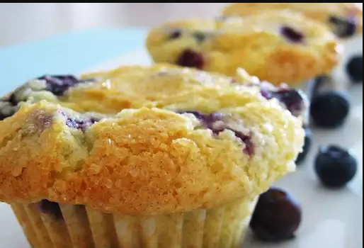

Dazzling Blueberry Muffins

Description
"Experience the magic of muffins with our Dazzling Blueberry Muffins. Bursting with juicy blueberries, these little wonders will add a splash of color and joy to your breakfast or snack time. Get ready for a dazzling culinary adventure!"
Ingredients
- 2 cups all-purpose flour
- 1 cup sugar
- 1 tablespoon baking powder
- 1/2 teaspoon salt
- 1 cup milk
- 1/2 cup unsalted butter, melted
- 1 large egg
- 1 teaspoon vanilla extract
- 1 1/2 cups fresh or frozen blueberries
Steps
- Preheat your oven to 375°F (190°C) and line a muffin tin with paper liners.
- In a large bowl, whisk together flour, sugar, baking powder, and salt.
- In another bowl, whisk together milk, melted butter, egg, and vanilla extract.
- Pour the wet ingredients into the dry ingredients and stir until just combined.
- Gently fold in the blueberries.
- Spoon the batter into muffin cups, filling each about two-thirds full.
- Bake for 18-20 minutes or until a toothpick inserted comes out clean.
- Let the muffins cool a bit, then get ready to be dazzled by the deliciousness!